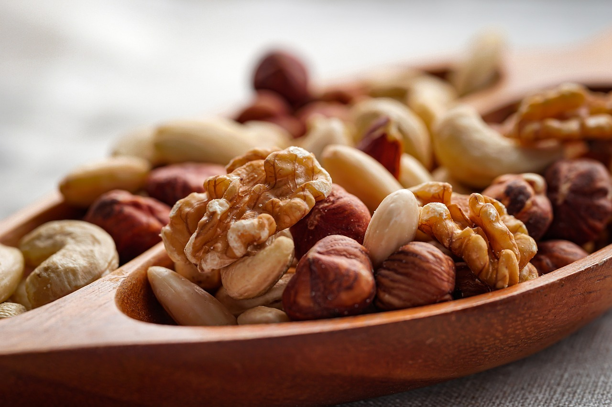
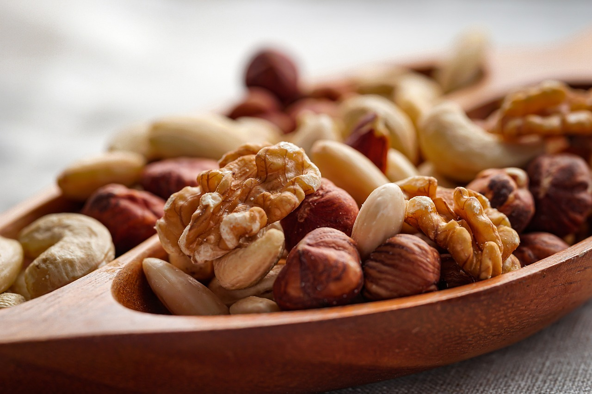

아몬드, 호두, 피칸, 헤이즐넛 등은 불포화 지방산과 항산화 성분이 풍부해 혈관을 보호하고 콜레스테롤 수치를 낮추어 심혈관 질환을 예방합니다.
오호두는 오메가-3 지방산이 많아 뇌 기능을 향상시키고 인지력 저하와 치매 예방에 도움을 줍니다. 피스타치오와 같은 견과류는 스트레스 해소와 정신 안정에도 유익합니다.
아몬드, 피스타치오는 식이섬유와 단백질이 풍부해 혈당 상승을 억제하고 포만감을 높여 당뇨 예방에 도움을 줍니다..
캐슈넛과 피스타치오는 고단백, 고식이섬유 식품으로 포만감을 제공해 체중 관리에 유리합니다. 적절히 섭취하면 과식 방지에 효과적입니다.
캐슈넛과 아몬드는 아연과 철분이 풍부해 면역 시스템을 강화하고 빈혈을 예방합니다. 이 외에도 견과류의 구리 성분은 적혈구 생성을 돕습니다.
칼로리가 높으므로 하루 약 30g 섭취가 적당합니다. 알레르기 유발 가능성이 있으니 주의가 필요합니다. 염분이 많은 견과류는 피하고 생견과류 또는 무염 제품을 선택하는 것이 좋습니다.